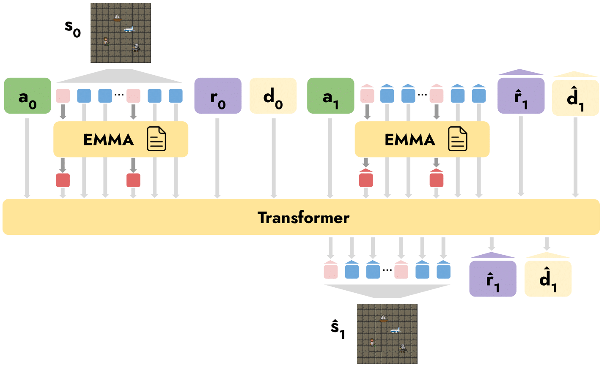

Putting artificial agents under human control is vital in order to leverage their powerful capabilities. Installing probabilistic world models into artificial agents opens an unprecedented channel for humans to control these agents. In addition to being able to regulate the behavior of agents through direct policy update, humans can modify their world models to effectively influence their decisions. Nevertheless, current world models are difficult for humans to adapt because they lack a natural communication interface.
We introduce Language-Guided World Models (LWMs), which can be modulated via natural language. To facilitate the development of LWMs, we design a challenging benchmark based on the game of MESSENGER (Hanjie et al.,2021), requiring compositional generalization to new language descriptions and environment dynamics. We show that the current state-of-the-art Transformer architecture performs poorly on this benchmark, and develop a more robust architecture. To showcase the practicality of LWMs, we simulate a scenario where these models facilitate safe and transparent human-agent collaboration.
Learning LWMs poses a challenging problem involving the retrieval and incorporation of information expressed in different modalities. Our model is an encoder-decoder Transformer which encodes a manual and decodes a trajectory. We transform the trajectory into a long sequence of tokens and train the model as a sequence generator. We implement a specialized attention mechanism inspired by EMMA (Hanjie et al., 2021) to incorporate textual information into the observation tokens.

Our goal is to build world models that can generalize to compositionally novel texts and environment dynamics. We construct a challenging benchmark based on the MESSENGER environment to evaluate this capability of world models. The benchmark tests a model on various levels of compositional generalization.
We demonstrate the effectiveness of our proposed model through both intrinsic and extrinsic evaluations. The model outperforms the standard encoder-decoder Transformer and approaches the performance of an oracle with a perfect semantic-parsing capability.
@article{zhang2024languageguided
title={Language-Guided World Models: Enhancing Human Control Over Artificial Agents},
author={Zhang, Alex and Nguyen, Khanh and Tuyls, Jens and Lin, Albert and Narasimhan, Karthik},
year={2024},
journal={arXiv},
}